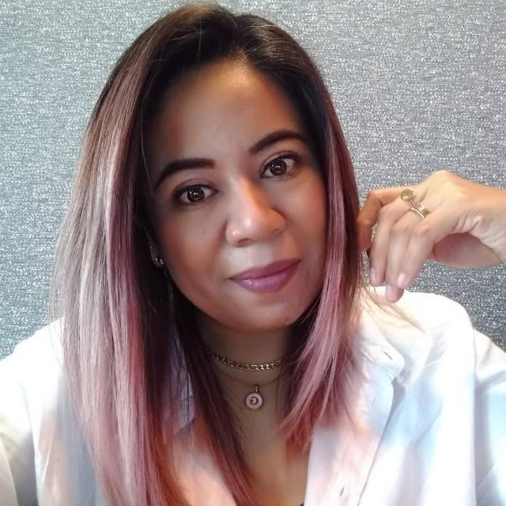

Global Learning Advocate | COIL Virtual Exchange Leader | Program Designer | EdTech Professional | Faculty Development Specialist | Inspiring Educator

Hi, I’m Gabriela Méndez—educator, COIL & Virtual Exchange consultant, and global learning advocate. With a Master’s in IT Management and 15+ years of experience, I focus on online education, intercultural collaboration, and faculty development. I’ve led COIL VE initiatives at Tecnológico de Monterrey, Florida International University, and the University of Minnesota, and worked with partners across the Americas, Europe, Asia, and Africa. I enjoy designing bilingual workshops and supporting projects that blend EdTech, inclusive pedagogy, and intercultural learning.
Passionate about building meaningful global connections—let’s connect and explore new ways to collaborate!
A career at the intersection of international education, technology, and program coordination — supporting institutions in building sustainable global learning initiatives.
Here are some resources I’ve developed to support educators and practitioners in global learning, virtual exchange, and intercultural collaboration. Click on each link to learn more about each resource:
My review of the book Perspectivas de la internacionalización en la educación superior en América Latina, by María José Castelazo André, Judith Pinos, and Julio Zurita Altamirano, has been published in the Revista Internacional de Cooperación y Desarrollo. The review is in Spanish, but I hope you'll still take a look!
We're about to launch TRES (Transforming Learning through Reflection, Engagement, and Global Stewardship) — an initiative co-created with Ann Smith and Eva Haug, and supported by the Global Citizenship Alliance. Registration is still open! ✨
Our first concentration, Global Stewardship in Course Design, runs June 1–12, 2026.